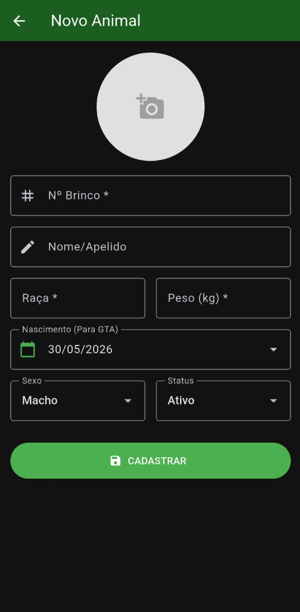
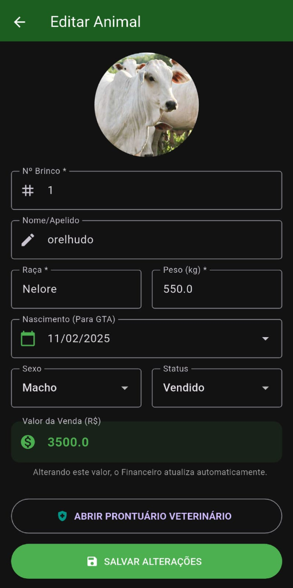
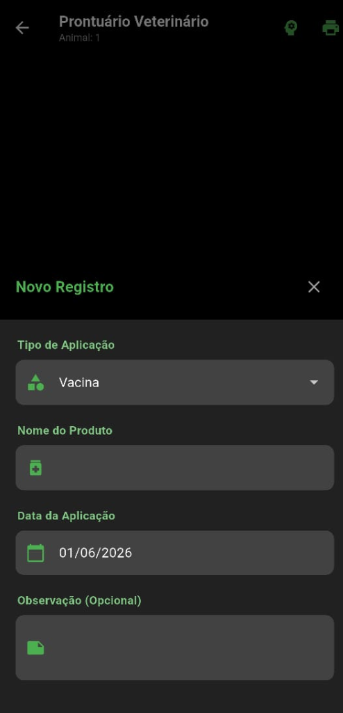

Manual do Gestor Gado
Documentação técnica mapeando a infraestrutura offline do aplicativo Gestor Gado desenvolvido em Flutter/Dart e SQLite. Detalhamento real de códigos, telas de prontuários e inteligência de pesagem.
info 1. Introdução ao Gestor Gado
O Gestor Gado é uma plataforma pecuária desenvolvida especificamente para operar em áreas remotas e sem sinal de internet (100% offline). O sistema é estruturado sobre um banco de dados local SQLite, garantindo controle logístico, sanitário e financeiro diretamente nas mãos do produtor rural.
badge 2. Cadastro Técnico de Animais (CadastroAnimalScreen)
Esta tela gerencia a entrada e a ficha zootécnica de cada bovino do rebanho, oferecendo campos estruturados e validações operacionais severas:
- Identificação Única (Nº Brinco): Campo obrigatório numérico para o controle de rastreabilidade física do animal.
- Apelido & Raça: Campos descritivos para facilitar a busca rápida e categorização morfológica.
- Peso Inicial: Campo decimal obrigatório (suporta vírgula que é tratada programaticamente para ponto) para rastrear o histórico de crescimento.
- Calendário de Nascimento (Para GTA): Calendário interativo com tema escuro forçado e limites biológicos realistas para garantir a precisão no cálculo da idade exata para a emissão da Guia de Trânsito Animal (GTA).
- Classificação de Status e Sexo: Seleção rápida de Sexo (Macho/Fêmea) e Status vital (Ativo, Vendido, Morto ou Doente).
- Upload de Fotos do Aparelho: Conexão direta com a câmera e galeria do celular. As imagens são redimensionadas para economia de armazenamento local (`quality: 50`) e salvas no diretório local de documentos do app com nome em timestamp de milissegundos.

Formulário de Cadastro de Novo Animal (Ficha Zootécnica).

Formulário de Edição de Animal com histórico financeiro e atalho veterinário.
health_and_safety 3. Prontuário Veterinário & Manejos (HistoricoSaudeScreen)
Centralizador sanitário do animal. Registra manejos de vacinação, vermifugação e suplementação de forma cronológica, oferecendo recursos de auditoria e exportação física:
- Categorias de Manejo Técnico: Lançamentos rápidos sob as categorias:
Vacina(azul),Vermífugo(roxo),Vitamina(laranja),MedicamentoouOutro(verde), com ícones estilizados. - Histórico Visível (Timeline): Renderização em linha do tempo física vertical das aplicações com identificação de nome do produto, data e observações veterinárias livres.
- Exportação e Impressão de Laudos: Botão de impressão integrado ao serviço
PdfService, gerando um documento PDF formatado contendo a ficha completa zootécnica do animal e todo o histórico sanitário para envio direto a compradores ou fiscais sanitários.

Interface de inclusão de Novo Registro Sanitário (Manejos e Tratamentos).
payments 4. Módulo Financeiro & Integração de Vendas (FinancasScreen)
Controla o fluxo de caixa rural mapeando despesas operacionais (saídas) e faturamento de vendas (entradas) filtrados mês a mês:
- Indicadores Rápidos: Faturamento mensal de Receitas, despesamento bruto de Saídas e o Saldo líquido final (azul se positivo, laranja se negativo).
- Gatilho Automático de Venda: Regra de Negócio Crucial: No cadastro do animal, se o status do bovino for alterado para
Vendido, o formulário abre um campo obrigatório para digitar o Valor da Venda. Ao salvar, o sistema insere automaticamente uma nova transação financeira deENTRADAno caixa geral com a descrição "Venda Boi [Nº Brinco]" e vincula o ID do animal. - Devolução ao Caixa por Cancelamento: Caso o administrador edite o animal novamente e reverta o status de "Vendido" para "Ativo" (corrigindo um erro), o sistema deleta a transação financeira vinculada de forma autônoma.
cloud_sync 5. Banco de Dados Local & Segurança (BackupScreen)
Garante que os dados do produtor fiquem salvos localmente no dispositivo e possam ser importados ou exportados em caso de troca de celular:
- Persistência SQLite Relacional: Tabelas estruturadas e otimizadas de
animais,manejosetransacoespersistidas na memória física do aparelho. - Exportação em Arquivo Físico (.db): O aplicativo copia o arquivo do banco de dados local da área reservada do sistema para a pasta de downloads públicos do usuário, permitindo o envio do arquivo via WhatsApp ou e-mail.
- Importação e Restauração Total: Permite carregar um arquivo de backup externo, realizando a substituição instantânea e a remontagem de todo o histórico de prontuários, transações financeiras e fotos cadastradas.